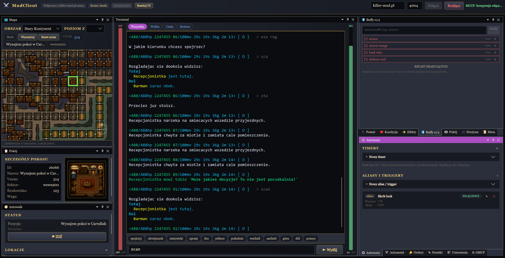

KillerMudClient
Nowoczesny, wieloplatformowy klient MUD stworzony z myślą o killer-mud.pl — z mapą świata, automatami i pełnym wsparciem GMCP.
Windows · Linux · macOS
C# / Avalonia
open source · MIT

Nowoczesny, wieloplatformowy klient MUD stworzony z myślą o killer-mud.pl — z mapą świata, automatami i pełnym wsparciem GMCP.

Interaktywna mapa z 17 obszarami i prawie 25 tysiącami pokoi, śledzeniem pozycji przez GMCP, biomowymi podkładami graficznymi i autowalkiem z odzyskiwaniem trasy.
Panel Automaty: własne aliasy i triggery z wzorcami oraz timery powtarzające komendy.
Panel wymaganych buffów pokazuje, czego brakuje, a komenda /recast jednym ruchem rzuca wszystkie brakujące czary.
Automatyczne wsparcie walczącego członka drużyny oraz opcjonalne wykonywanie rozkazów lidera grupy — z politykami bezpieczeństwa opartymi o dane GMCP.
Zwirtualizowany bufor do 10 000 linii — wielogodzinne sesje nie spowalniają UI. Kolory ANSI (16/256/RGB), filtry kanałów: walka, czaty, system.
Telnet, GMCP, MCCP2 (kompresja zlib), NAWS, TTYPE, EOR. Konta z hasłem szyfrowanym DPAPI i autologowaniem. Dokowalne, konfigurowalne panele UI.
Binarka nie jest podpisana — po rozpakowaniu:
chmod +x KillerMudClient-* xattr -dr com.apple.quarantine .